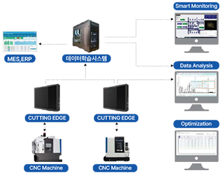
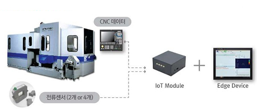
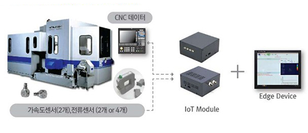

Smart Cutting
스마트 커팅개요
- CNC 기계 가공에서 생산성 혁신을 창출하는
Digital Transformnation 솔루션
- CNC공작기계로부터 가공조건 데이터, loT로 가공상태/장비 데이터를 모니터링해 데이터분석/진단/최적을 수행하고, 데이터학습을 통해 최적작업을 수행하도록 장비와 공정조건을 제어할 수 있습니다.
- 많은 고객사에서 스마트커팅을 제조현장에 적용함으로써 가공 부하기반 이송속도 적응제어와 공구파손인지 후공구자동교환등을 통해서 생산시간 단축과 함께 품질향상을 이루어 냈습니다.
- 또한 고객사가 기존에 구축한 PoP, MES, ERP 등과도 데이터 호환을 지원함으로써 제조업의 디지털 전환을 적극적으로 지원하고 있습니다.

- #파손진단
- #이송속도
- #가공부하
- #최적화
- #상태진단
- #모니터링
주요기능 Key Features
엣지디바이스 Edge device
Cutting Edge(Advance2/4)
- CNC데이터 실시간 모니터링 : 실제 이송속도, 실제 RPM 등
- 스핀들모터, 이송서브모터 부하의 실시간 모니터링
- 이송속도 최적화를 위한적응제어 (전류센서와 스핀둘로드 기반)
- 공구 파손 검출 및 진단 : 전류센서 기반
Cutting Edge(Premium2/4)
- CNC데이터 실시간 모니터링 : 실제 이송속도, 실제 RPM 등
- 스핀들모터, 이송서브모터 부하 및 가공상태의 실시간 모니터링
- 이송속도 최적화를 위한적응제어, 채터 검출 밑 제거
- 공구마모 진단(전류센서 기반) 및 소경공구 파손 검출(가속도센서 기반)